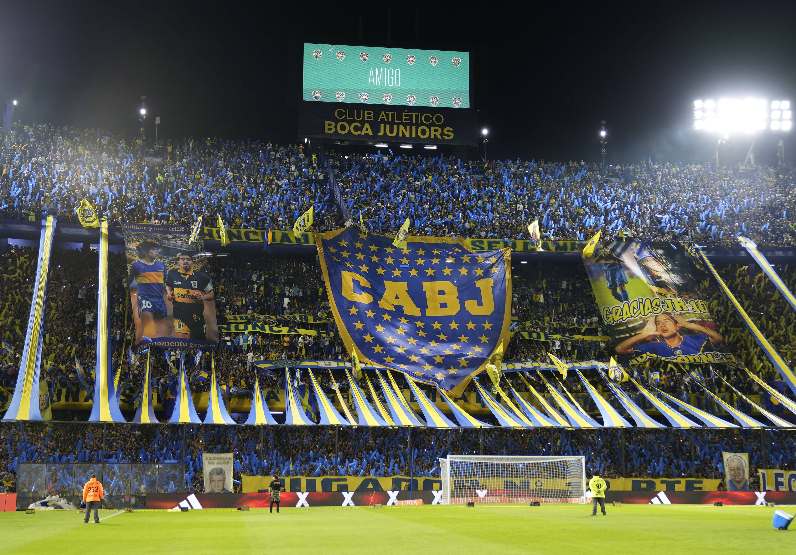
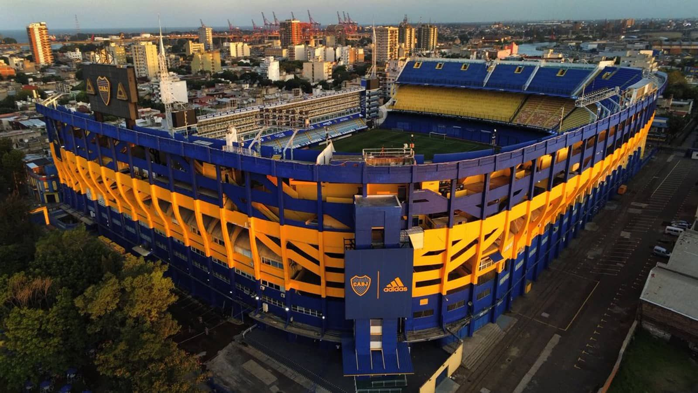

Boca Juniors

Den ikoniska arenan La Bombonera har en arkitektur som inte liknar någon annan i världen; dess platta långsida och branta läktare skapar en akustik där ljudet inte försvinner uppåt utan studsar tillbaka ner mot planen. Det är denna unika konstruktion som gett upphov till myten om att arenan "hjärtat slår", då vibrationerna från tiotusentals hoppande supportrar får betongen att gunga fysiskt. För en bortaspelare är det en klaustrofobisk upplevelse där publiken känns så nära att man nästan kan röra vid dem, vilket skapar en psykologisk press som är svår att simulera någon annanstans.

Supporterkulturen i Boca Juniors, ledd av den ökända gruppen La Doce, är en färgstark och kaotisk symfoni av sydamerikansk passion. Varje match inleds med ett hav av konfetti, enorma pappersrullar och rök i gult och blått som gör sikten nästintill obefintlig för en stund. Det är en atmosfär präglad av en konstant ljudmatta från trummor och trumpeter som aldrig tystnar, oavsett om laget ligger under. Denna obevekliga energi fungerar som en tolfte spelare och kan ofta vända matchbilder genom att bokstavligen bära fram sitt lag under de sista minuterna.

Kopplingen mellan klubben och stadsdelen La Boca är fundamental för förståelsen av stämningen. Det är ett område präglat av immigration och arbetarklassens hårda vardag, där fotbollen fungerar som den främsta källan till kollektiv stolthet och glädje. När man befinner sig på läktaren känner man att det handlar om så mycket mer än bara sport; det är en social sammanhållning där varje mål firas som en befrielse. Denna djupa, nästan religiösa lojalitet gör en hemmamatch med Boca Juniors till en av de mest intensiva mänskliga upplevelserna man kan bevittna på en idrottsarena.